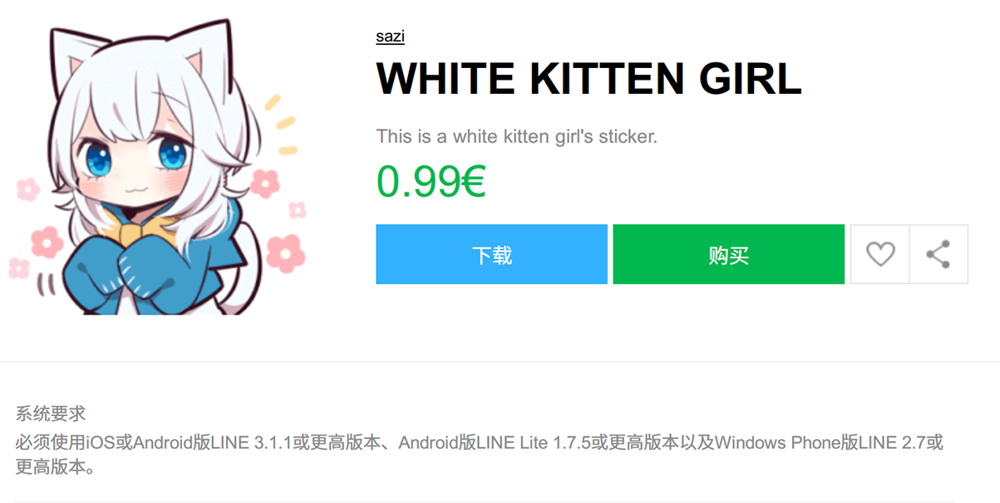

LINE 的贴图大部分都很可爱，很萌萌二次元，所以就想保存下来放到 QQ 、Telegram 上用。
一个一个的保存太麻烦，很久之前写了个 bash 脚本来下载。可是就在几月前，我那脚本和一百四十多小时的 BOTW 存档就因为 SSD 掉盘，被某东的小哥带走了。满满当当的 MLCSSD 就这么变成了空荡荡的 TLCSSD ……
不过这都是很久以前的事情了，今天我又碰到一套好看的贴图想存下来，就 Google 看看有没有更简单的保存方法，然后看到 GitHub 上面有个把 LINE 贴图转到 Telegram 的工具，看一下源码发现了 LINE 的贴图包下载链接，可以直接下载。明明商店页面的图片还要验 Referrer 的说…
https://sdl-stickershop.line.naver.jp/stickershop/v1/product/贴图ID/iphone/stickers@2x.zip
后来 Greasyfork 上的小伙伴说还有动图包的链接，可以下载到动图和声音文件。
https://sdl-stickershop.line.naver.jp/stickershop/v1/product/贴图ID/iphone/stickerpack@2x.zip
iphone 也可以换成 android ，不过 iphone 的图大，应该是画质更好吧。
但这样也要手动改 url 再粘贴回车，还是很麻烦。
想到用油猴子应该可以在页面上加个下载按钮，可是我之前没接触过 js ，甚至连 js 的全名都拼不全……
好在搜索引擎是万能的，帮我解决了这些问题。不过还是有一些地方不明白，好多东西真是用到的时候才觉得少啊，下面是成果。
 下面是脚本内容，也可以去
Greasyfork 安装。
LINE Sticker Download.user.jsInstall1
2
3
4
5
6
7
8
9
10
11
12
13
14
15
16
17
18
19
20
21
22
23
24
25
26
27
28
29
30
31
32
33
34
35
36
37
38
|
var id = window.location.pathname.replace(/[^\d]/g, '');
var link = 'https://sdl-stickershop.line.naver.jp/stickershop/v1/product/' + id + '/iphone/stickers@2x.zip';
var aslink = 'https://sdl-stickershop.line.naver.jp/stickershop/v1/product/' + id + '/iphone/stickerpack@2x.zip';
if ($('span').hasClass('MdIcoAni_b') || $('span').hasClass('MdIcoPlay_b') ||$('span').hasClass('MdIcoSound_b') ||
$('span').hasClass('MdIcoFlashAni_b') || $('span').hasClass('MdIcoFlash_b')) link = aslink;
var file = { url: link, name: document.title.replace(/(.+) (-|–) .+/g, '$1') + '.zip' };
var lang = navigator.language;
var btnstr = 'Download';
if (lang.indexOf('zh') > -1) btnstr = '下载';
else if (lang.indexOf('ja') > -1) btnstr = 'ダウンロード';
var btn = '<li class="mdCMN08Li" style="list-style-type: none">'
+ '<a class="MdBtn01 mdBtn01" id="download" style="background: #33b1ff">'
+ '<span class="mdBtn01Inner">'
+ '<span class="mdBtn01Txt">' + btnstr + '</span>'
+ '</span></a></li>';
if ($('div').hasClass('mdCMN08Txt')) {
$('.mdCMN08Txt>ul').find('li:eq(0)').remove();
$('.mdCMN08Ul').prepend(btn);
}
else if ($('div').hasClass('mdMN05Btn')) {
$('.mdMN05Btn').prepend(btn);
}
$('body').on('click', '#download', function(){
var result = GM_download(file);
});
|
还有个歪果仁拉我进他们 LINE 转 Telegram 表情包的群，可是我鹰语和毛语本当苦手，看不懂他们说的话就退掉了，好多东西真是用到的时候才觉得少啊Orz…
不过这也都是没办法的事。